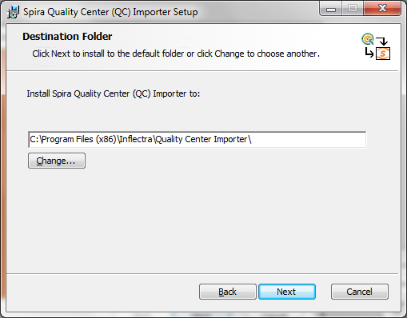
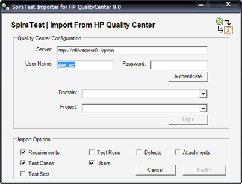
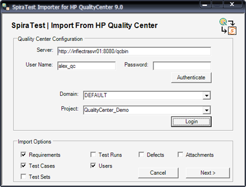
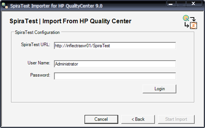

Migrating from HP QualityCenter
This section outlines how to use the included Migration Tool for importing Requirements, Test Cases, Test Runs and Incidents from HP QualityCenter (formerly known as Mercury TestDirector).
Installing the QualityCenter Migration Tool
This section outlines how to install the migration tool for QualityCenter onto a workstation so that you can then migrate whole projects from QualityCenter to SpiraTest. It assumes that you already have a working installation of SpiraTest v3.0 or later. If you have an earlier version of SpiraTest you will need to upgrade to at least v3.0 before trying to migrate projects.
The Windows installation package can be downloaded from the 'Add-Ons & Downloads" section of the Inflectra website. Once you have obtained the Windows Installer package, simply double-click on the package to begin the installation wizard which should display the following welcome page:

Click the <Next> button, accept the software license, then click <Next> again to choose the folder to install the migration tool to:

Choose the folder to install to, and then decide whether the application should be accessible by all users on the workstation or just the current user. Then click the <Install> button to start the installation process. It will confirm if you want to proceed, click <Next> then wait for it to finish.
Using the HP QualityCenter Migration Tool
Now that you have installed the migration tool, you can launch it at any time by going to Start > Programs > SpiraTest > Tools > QualityCenter Importer. This will launch the migration tool application itself:

The first thing you need to do is to enter the URL for the instance of HP QualityCenter that you want to import the information from (typically of the form http://<server name>/qcbin) together with a valid username and password.
Note that the importer has only been tested against version 9.0 of Quality Center or later. It may not work correctly against previous versions. Once you have entered this information, click the <Authenticate> button and the list of possible domains and projects will be populated.
Select the QualityCenter domain and project that you want to import from and click the <Login> button:

Assuming that the user name selected has permission to access this project, you will be prompted with a message box indicating that the login was successful. Now choose the types of artifact you want to import and then click the <Next> button to move to the next page in the import wizard:

This page allows you to enter the URL, user name and password that you want to use to access the instance of SpiraTest that you want to import to and click <Login>. Typically the URL is of the form (http://<server name>/SpiraTest). The version of the importer being used must be compatible with the version of SpiraTest you're importing into; if not you will receive an error message.
Assuming that the login was successful, click the <Start Import> button to actually begin the process of importing the various artifacts from QualityCenter into SpiraTest. Note that the importer will automatically create a new project in SpiraTest to hold all the artifacts with the same name as that used in QualityCenter.

During the import process, as each of the types of artifact are imported, the progress display will change (as illustrated above). Once the import has finished, you will receive a message to that effect and the <Done> button will be enabled. Clicking this button closed the importer. You should now log into SpiraTest using the same user name and password that was used for the import to view the imported project.
The migration tool will import the following artifacts:
Users (but not their roles and permissions)
Requirements
Test Cases and their associated manual design steps (but not any automated test scripts)
Test Runs and their associated manual test steps
Test Sets and the association with the test cases
Defects, together with their associated lists of priorities and statuses
The coverage relationship between requirements and test cases
The linkages between any defects and test runs
The first ten (10) user-defined fields on each of the above artifact types.
Any attachments associated with the requirements, test cases, test sets or design steps.
Note: Once you have migrated a project into SpiraTest you will have the definitions of incident priorities and statuses from both SpiraTest and QualityCenter (this is because QualityCenter doesn't use the same codes as SpiraTest, so they will be imported). You should go back in to the Administration screen and make all the SpiraTest statuses and priorities inactive.